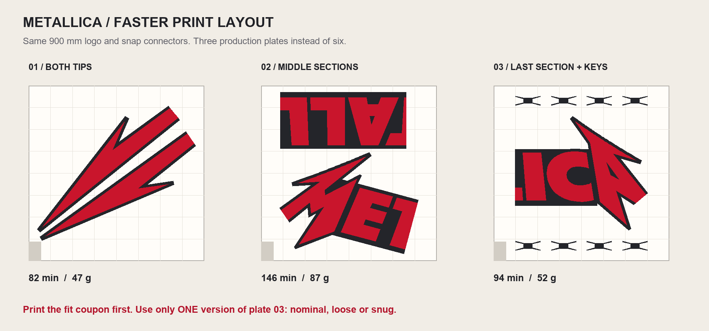
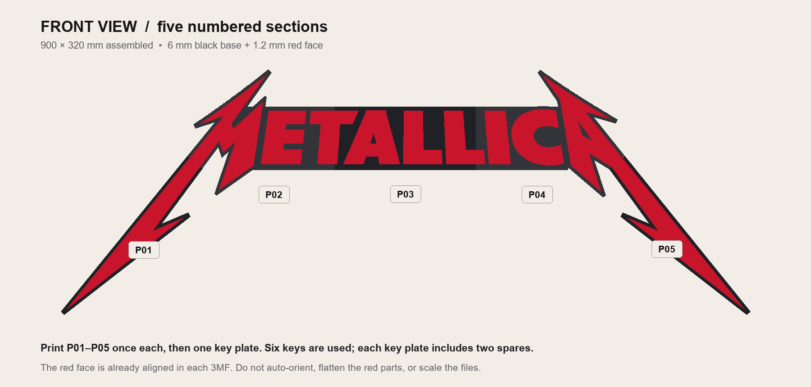
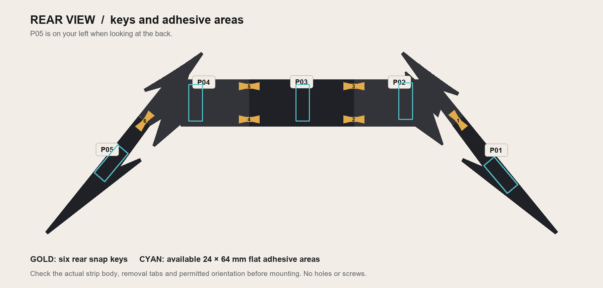

METALLICA / FAST PRINT EDITION
Same big logo.
Three production plates.
The 900 × 320 × 7.2 mm model, five sections, color layout and connector dimensions are unchanged.

| Five sections + eight keys | Original | Optimized |
|---|---|---|
| Slicer time estimate | 6 h 57 min | 5 h 21 min |
| Filament | 235 g | 186 g |
| Production plates | 6 | 3 |
About 23% faster and 21% less filament. The unchanged fit coupon adds roughly 28 minutes and 12.5 g to either version. Actual time depends on your settings; cooling and manual plate handling are additional.
Print in this order
- 00_PRINT_FIRST_fit_test.3mf: confirm the connector fit first. If you already printed and checked the original coupon, its result still applies to the connector dimensions. On the coupon, keys are loose → nominal → snug from left to right.
- 01_BOTH_LIGHTNING_TIPS.3mf: both long tips, P01 + P05.
- 02_MIDDLE_SECTIONS.3mf: P02 + P03.
- 03_LAST_SECTION_AND_KEYS_NOMINAL.3mf: P04 plus eight keys. Six are used and two are spares. If your test calls for a loose or snug fit, use the corresponding file in Alternative_key_fits instead of the nominal plate.
What changed
The main panels now use 8% rectilinear infill, three walls, four top layers (0.8 mm) and three bottom layers (0.6 mm). The keys retain four walls and 100% infill through saved per-object overrides. All parts retain 0.20 mm layer height to preserve the socket details. Filament flow limits and normal printer speed limits are unchanged.
Grouping the parts reduces the five logo color changes to three and avoids three separate plate start-ups. The profiles leave ironing, supports, brims and the prime tower off, as in the original kit.
The reduced internal plastic makes the panels lighter and less reinforced than the original version. Four top layers are retained for the visible face, and the connector walls and solid keys are preserved. Physical durability and adhesion have not been tested.
Open in Bambu Studio
Open each 3MF as a project so the saved settings and key overrides load. Confirm P1S / 0.4 mm, select your actual build plate, and map filament 1 to your black Creality Hyper PLA and filament 2 to your red Soyelin Ultra PLA. Use your calibrated filament settings and re-slice before printing. Applying a different process preset may replace the optimization.
Every optimized project sliced successfully with no warnings. All parts fit inside the build plate and avoid its excluded corner. Parts are at least 5 mm apart. The native last-plate project was reopened and re-sliced to verify the saved settings.
Assembly is unchanged

The maps below use the original part IDs even though several parts now share a plate.

Assemble face down on a soft, flat surface; from the rear the order is P05, P04, P03, P02, P01. Install six tested keys into their recessed rear sockets. Their flat printed undersides face the wall. Support the tips while handling the sign.
The cyan areas indicate available flat adhesive surfaces, not a certified Command strip pattern. Confirm the strip size and permitted orientation, keep removal tabs accessible, and test on your printed PLA and actual wall. Follow Command's application and removal instructions.
Individual plate estimates
| Project | Time | Filament |
|---|---|---|
| 01_BOTH_LIGHTNING_TIPS.3mf | 82 min | 46.8 g |
| 02_MIDDLE_SECTIONS.3mf | 146 min | 87.3 g |
| 03_LAST_SECTION_AND_KEYS_NOMINAL.3mf | 94 min | 51.8 g |
| 03_LAST_SECTION_AND_KEYS_LOOSE.3mf | 93 min | 51.7 g |
| 03_LAST_SECTION_AND_KEYS_SNUG.3mf | 94 min | 51.9 g |
The totals above use nominal keys. Details/ contains the slicer report, layouts, settings and comparison. Original STL and Blender files remain valid because geometry was not resized or changed.
Research used
Prusa: infill patterns describes rectilinear as a fast pattern with alternating directions. Prusa: layers and perimeters explains the importance of wall count and top layers. Those principles informed the trials; final choices were compared using this model in Bambu Studio 2.8.2.61. Four internal-fill/shell combinations were tested; the chosen rectilinear version was close to the fastest result with straightforward top-layer support.